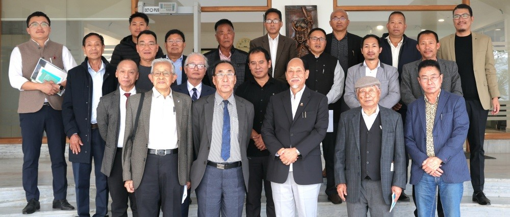
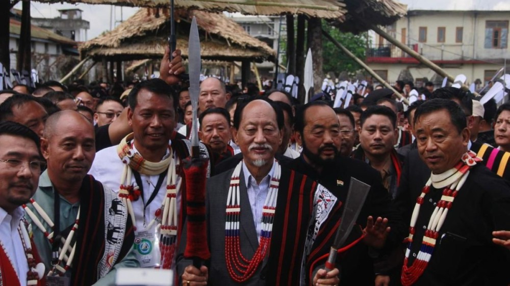
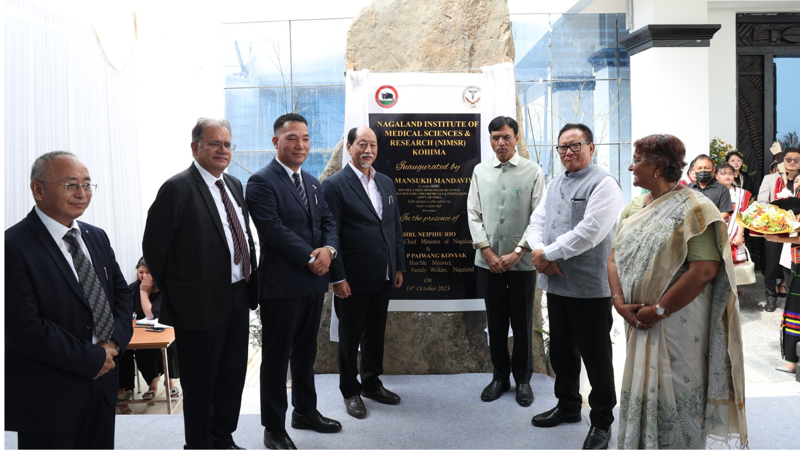
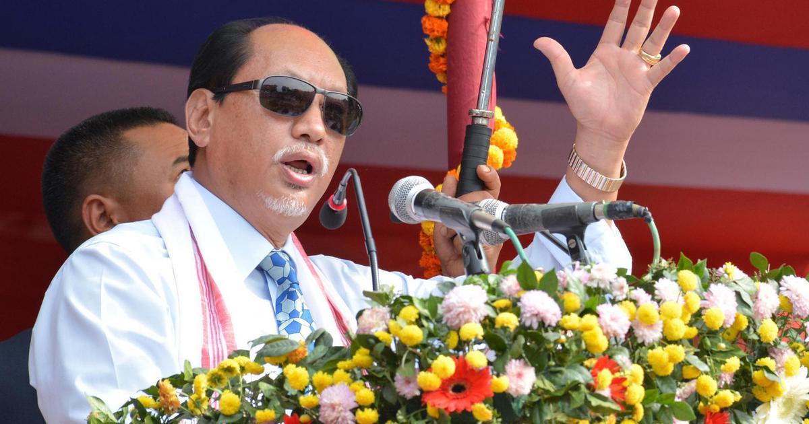

Gallery
Neiphiu Rio Official Portrait
Neiphiu Rio on 61st Statehood Day

Neiphiu Rio Meeting with Naga Club Officials

Neiphiu Rio at Moatsu Festival

Neiphiu Rio at Inauguration Ceremony of NIMSR

Neiphiu Rio Giving Public Addressing at Republic Day function
×